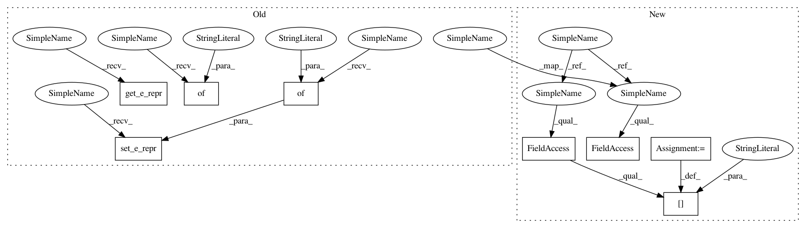

68ec624782bb4e4fb9f1adf1088cf39c1826533e,tests/pytorch/test_basics.py,,test_dynamic_addition,#,348
Before Change
// Test node addition
g.add_nodes(N)
g.set_n_repr({"h1": th.randn(N, D),
"h2": th.randn(N, D)})
g.add_nodes(3)
n_repr = g.get_n_repr()
assert n_repr["h1"].shape[0] == n_repr["h2"].shape[0] == N + 3
// Test edge addition
g.add_edge(0, 1)
g.add_edge(1, 0)
g.set_e_repr({"h1": th.randn(2, D),
"h2": th.randn(2, D)})
e_repr = g.get_e_repr()
assert e_repr["h1"].shape[0] == e_repr["h2"].shape[0] == 2
g.add_edges([0, 2], [2, 0])
e_repr = g.get_e_repr()
g.set_e_repr({"h1": th.randn(4, D)})
assert e_repr["h1"].shape[0] == e_repr["h2"].shape[0] == 4
g.add_edge(1, 2)
g.set_e_repr_by_id({"h1": th.randn(1, D)}, eid=4)
e_repr = g.get_e_repr()
assert e_repr["h1"].shape[0] == e_repr["h2"].shape[0] == 5
After Change
N = 3
D = 1
g = DGLGraph()
// Test node addition
g.add_nodes(N)
g.ndata.update({"h1": th.randn(N, D),
"h2": th.randn(N, D)})
g.add_nodes(3)
assert g.ndata["h1"].shape[0] == g.ndata["h2"].shape[0] == N + 3
// Test edge addition
g.add_edge(0, 1)
g.add_edge(1, 0)
g.edata.update({"h1": th.randn(2, D),
"h2": th.randn(2, D)})
assert g.edata["h1"].shape[0] == g.edata["h2"].shape[0] == 2
g.add_edges([0, 2], [2, 0])
g.edata["h1"] = th.randn(4, D)
assert g.edata["h1"].shape[0] == g.edata["h2"].shape[0] == 4
g.add_edge(1, 2)
g.edges[4].data["h1"] = th.randn(1, D)
In pattern: SUPERPATTERN
Frequency: 3
Non-data size: 8
Instances
Project Name: dmlc/dgl
Commit Name: 68ec624782bb4e4fb9f1adf1088cf39c1826533e
Time: 2018-11-02
Author: minjie.wang@nyu.edu
File Name: tests/pytorch/test_basics.py
Class Name:
Method Name: test_dynamic_addition
Project Name: dmlc/dgl
Commit Name: 68ec624782bb4e4fb9f1adf1088cf39c1826533e
Time: 2018-11-02
Author: minjie.wang@nyu.edu
File Name: tests/pytorch/test_basics.py
Class Name:
Method Name: test_batch_setter_getter
Project Name: dmlc/dgl
Commit Name: 68ec624782bb4e4fb9f1adf1088cf39c1826533e
Time: 2018-11-02
Author: minjie.wang@nyu.edu
File Name: tests/pytorch/test_batched_graph.py
Class Name:
Method Name: test_batched_edge_ordering